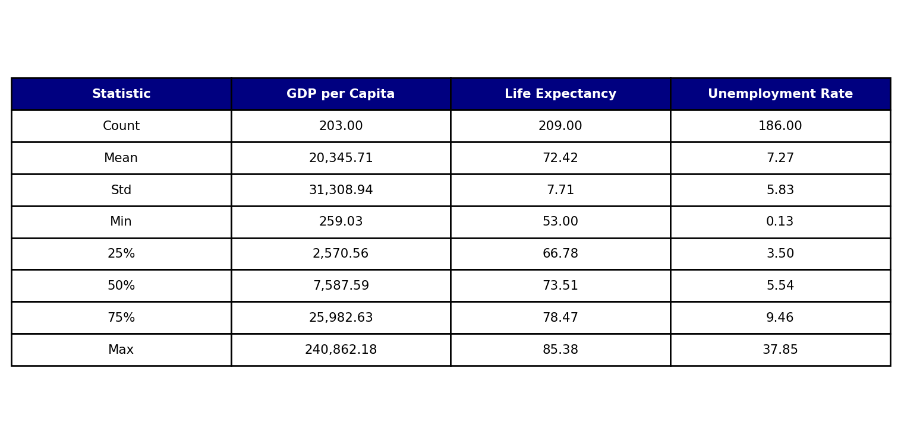
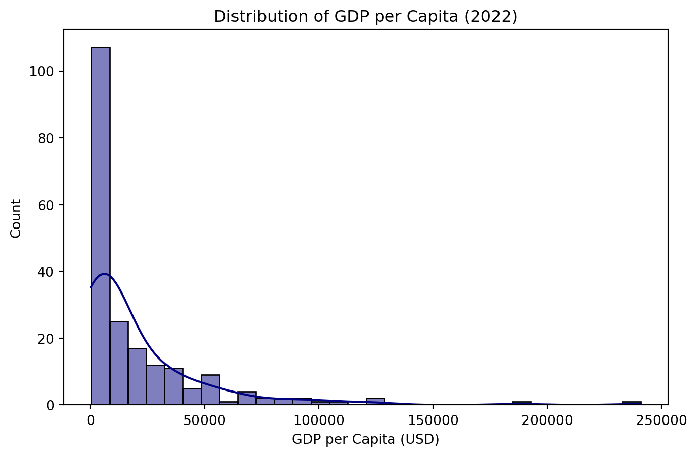
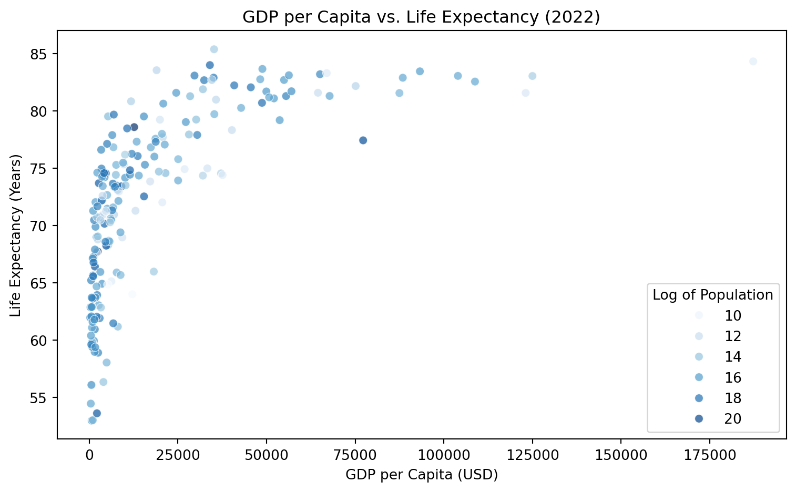
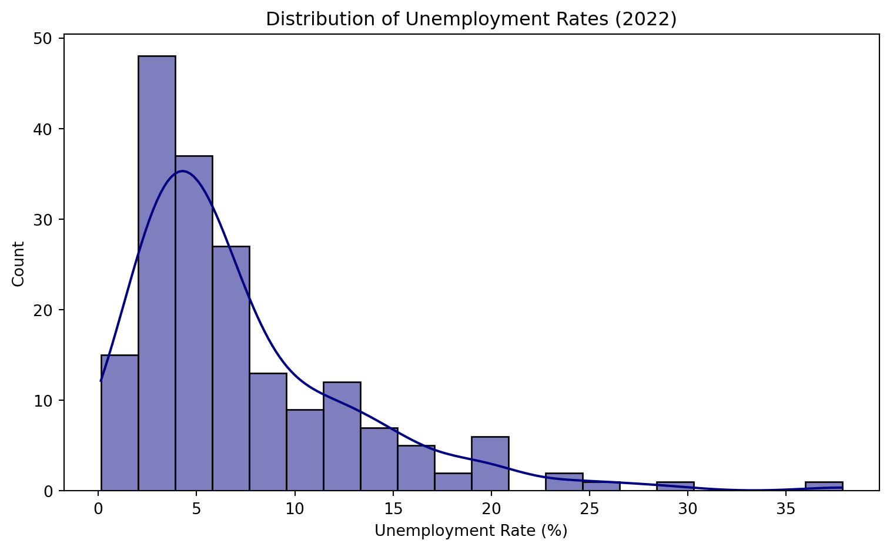

import pandas as pd
import matplotlib.pyplot as plt
import seaborn as sns
import numpy as np
# Load dataset
df = pd.read_csv("wdi.csv")World Development Indicators Analysis - 2022
Note: AI was used to develop some of the analysis and (“Presentations with Reveal.js in Quarto,” n.d.) was used to faciliate the presentation building.
1 Introduction
This report analyzes key economic and social indicators for different countries using the World Development Indicators dataset (2022). The analysis explores GDP per capita, life expectancy, and unemployment rates, providing insights into global trends.
The dataset is sourced from the World Bank.
2 Exploratory Data Analysis
2.1 Descriptive Statistics
desc_stats = df[['gdp_per_capita','life_expectancy','unemployment_rate']].describe()
table_data = []
for stat_name in desc_stats.index:
row = []
row.append(stat_name.capitalize())
gdp_val = desc_stats.loc[stat_name, 'gdp_per_capita']
life_val = desc_stats.loc[stat_name, 'life_expectancy']
unemp_val = desc_stats.loc[stat_name, 'unemployment_rate']
row.append(f"{gdp_val:,.2f}")
row.append(f"{life_val:,.2f}")
row.append(f"{unemp_val:,.2f}")
table_data.append(row)
column_labels = ["Statistic", "GDP per Capita", "Life Expectancy", "Unemployment Rate"]
fig, ax = plt.subplots(figsize=(8, 4))
ax.set_axis_off()
table = ax.table(
cellText=table_data,
colLabels=column_labels,
loc='center',
cellLoc='center'
)
ncols = len(column_labels)
for col_index in range(ncols):
header_cell = table[0, col_index]
header_cell.set_facecolor('#000080')
header_cell.set_text_props(weight='bold', color='white', fontsize = 14)
for row_index in range(1, len(table_data) + 1):
for col_index in range(ncols):
data_cell = table[row_index, col_index]
data_cell.set_text_props(fontsize=12)
table.scale(1, 1.4)
plt.tight_layout()
plt.show()Source (“World Bank Open Data,” n.d.).

Table 1 highlights substantial global disparities in the chosen metrics. On average, countries have a GDP per capita of around $20,000, though a small subset of very high-income countries skews this figure upward, with values ranging from roughly $259 to $241,000. Average life expectancy is about 72 years (with a spread of 53 to 85 years), while unemployment rates average 7.27% but range widely from 0.13% up to 37.85%. Overall, these statistics underscore substantial differences in economic well-being, health outcomes, and labor market conditions across countries.
2.2 GDP per Capita Distribution
The extremely wide range in GDP per capita suggests a highly skewed distribution—many countries sit at lower income levels, while a few outliers pull the global mean upward. To understand this spread more clearly, let’s visualize how GDP per capita is distributed.

Source: (“World Bank Open Data,” n.d.).
Figure 1 confirms that GDP per capita is heavily skewed to the right: most countries fall under lower income brackets, while a small number of outliers extend well above $100,000 and push the overall mean upward. This substantial skew implies that median values are likely more representative of typical country incomes than the mean.
2.3 GDP vs. Life Expectancy
Given this pronounced disparity in economic well-being, let’s examine how GDP per capita might correlate with other development outcomes—beginning with life expectancy.

Source: (“World Bank Open Data,” n.d.).
Figure 2 shows a strong positive relationship between GDP per capita and life expectancy, with significant gains in lifespan as income increases up to around $30,000–$40,000. Beyond that threshold, additional wealth yields diminishing returns on longevity, and many of the world’s most populous nations remain in lower-to-mid income brackets.
2.4 Unemployment Rate
Given this connection between economic well-being and life expectancy, let’s explore how labor market conditions factor into a country’s overall development profile. In this section, we shift our focus to unemployment rates, examining how they vary globally.

Source: (“World Bank Open Data,” n.d.).
As shown in Figure 3, countries appear to cluster below roughly 10% unemployment, with a peak around the low-mid single digits. A long right tail extends past 20% to as high as 35%, indicating that a smaller subset of countries faces significantly higher unemployment rates.
3 Conclusion
Overall, these findings reinforce the global disparities in economic development and social outcomes. A small group of high-income nations pushes the average GDP per capita upward, while most countries cluster well below that threshold. Wealth does appear to improve life expectancy up to a point, but the benefits level off beyond roughly $40,000 in GDP per capita. Meanwhile, most economies maintain single-digit unemployment rates, though a few nations face challenges above 20%. Together, these results underscore the need for targeted policy interventions, particularly for populations in lower-to-middle income and high-unemployment environments.
4 References
“Presentations with Reveal.js in Quarto.” n.d. https://quarto.org/docs/presentations/revealjs/presenting.html.
“World Bank Open Data.” n.d. https://data.worldbank.org/.